1. 가이드의 목적과 기본 구조
고객 온보딩은 고객을 등록하는 절차가 아니라, 고객과 함께 누구의 어떤 문제를 어떤 데이터와 실행 구조로 해결하며 무엇이 달라지면 성공으로 판단할지 합의하는 첫 번째 FDE 프로젝트입니다.
고객 목표 확인 → 핵심 문제·대상 업무 정의 → 이해관계자·책임자 지정 → 범위·제외 범위 확정 → 데이터·시스템 확인 → 보안·권한 확인 → KPI 합의 → 킥오프·13단계 계획 확정
문제해결할 업무가 정해져 있습니다.
사람사용자·책임자·의사결정자가 정해져 있습니다.
조건데이터·보안·AI 권한이 확인되어 있습니다.
성과MVP 범위와 KPI가 합의되어 있습니다.
온보딩의 결과는 회의록이 아니라 실행 가능한 프로젝트 헌장입니다.
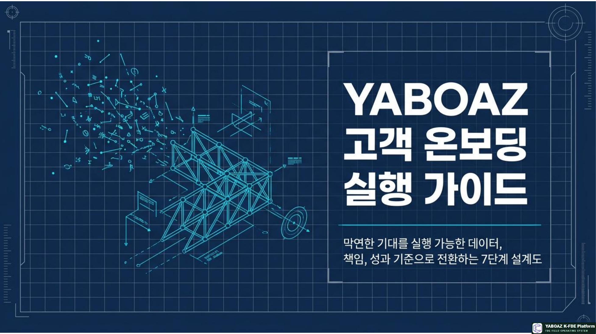
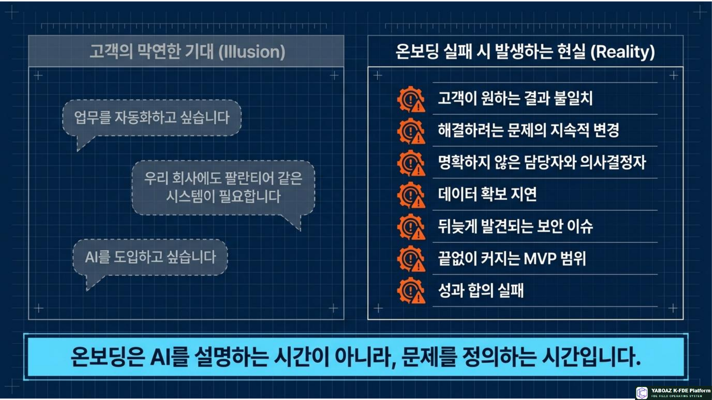
2. 고객 온보딩의 6대 목표
1. 고객 목표 정렬경영진·현업·IT·보안 담당자가 프로젝트 목적을 다르게 이해하지 않게 합니다.
2. 문제 범위 확정“AI를 도입하자”를 실제 업무 문제와 첫 실행으로 좁힙니다.
3. 책임체계 구축누가 결정하고 자료를 제공하며 현장을 검증할지 정합니다.
4. 실행 조건 확인데이터·시스템·사용자·보안·시간·예산을 점검합니다.
5. 성공기준 합의프로젝트의 성공을 판단할 KPI와 검증 기준을 설정합니다.
6. 신뢰 형성FDE를 평가자가 아니라 공동 설계자로 인식하게 합니다.
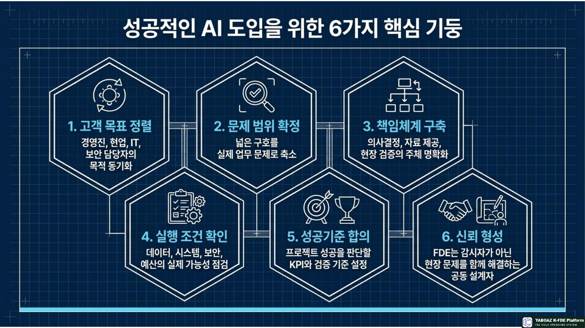
3. 온보딩 전 사전 준비
고객 기본정보
사업·조직회사, 사업영역, 제품·서비스, 조직 규모, 대상 부서, 주요 고객·공급망
변화·기존 활동경영진 관심사, 제안 배경, 기존 AI·DX 프로젝트, 디지털 시스템
사전자료 요청
조직도, 업무 프로세스·매뉴얼, 보고서, 최근 3~6개월 데이터, 시스템 구성도, 기존 프로젝트 보고서, 현장 담당자, KPI, 장애·민원·사고 기록, 보안규정을 요청합니다.
FDE 사전 가설
예시승인 지연은 승인자의 업무량보다 승인 요청 정보가 여러 시스템에 흩어져 있기 때문일 수 있다. 현재 가설은 탐색용 가정이며 현장 확인 후 수정될 수 있습니다.
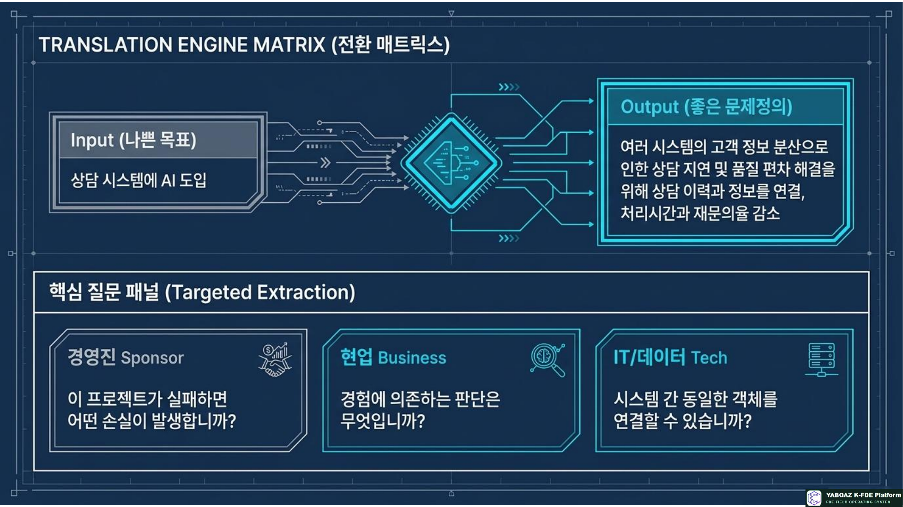
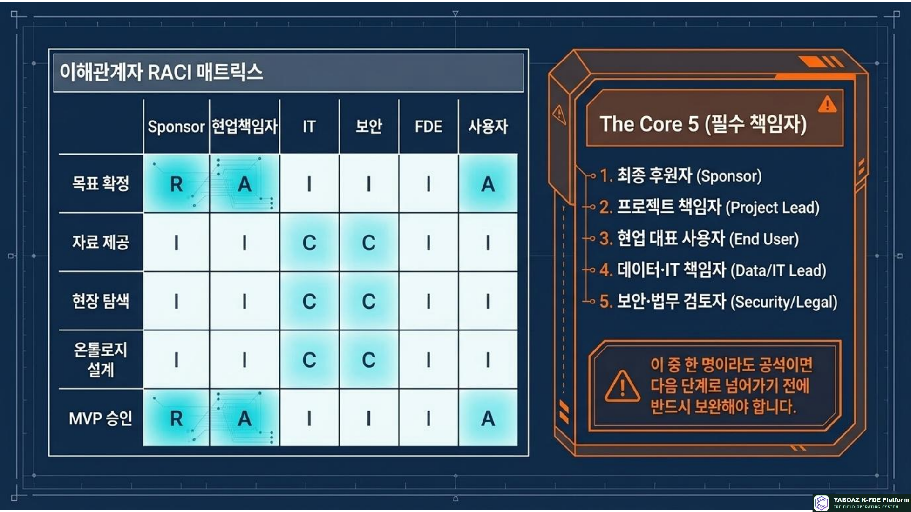
4. 고객 목표를 문제 문장으로 바꾸기
고객의 요구사항을 그대로 프로젝트 목표로 받아들이지 않고 경영 목표·현업 목표·기술 목표를 분리해 확인합니다.
경영진 질문프로젝트 성공 후 어떤 의사결정이 달라지는가? 비용·지연·위험은 무엇인가? 6개월 안에 왜 변화가 필요한가?
현업 질문가장 오래 걸리는 단계는? 반복 입력은? 공식 절차와 실제 방식의 차이는? 경험에 의존하는 판단은?
IT·데이터 질문데이터는 어디에 있는가? API가 가능한가? 소유자와 품질 문제는? 운영·유지보수 조직은?
문제정의 공식현재 상태 → 문제 → 영향 대상 → 손실 → 원하는 변화 → 측정 결과
나쁜 목표: AI 상담 시스템을 도입한다.
좋은 문제정의: 고객정보와 상담이력이 여러 시스템에 흩어져 처리시간과 답변 품질 편차가 커지고 있으므로, 정보를 연결해 평균 처리시간과 재문의율을 줄인다.
좋은 문제정의: 고객정보와 상담이력이 여러 시스템에 흩어져 처리시간과 답변 품질 편차가 커지고 있으므로, 정보를 연결해 평균 처리시간과 재문의율을 줄인다.
FireNavi 예시
문제정의화재 발생 시 건물 구조, 이용자 분포, 위험구역, 대피경로와 담당자 연락망이 분산되어 판단과 안내가 지연된다. 현장 데이터를 통합하고 위험도별 행동을 추천해 초기 대응시간을 줄인다.
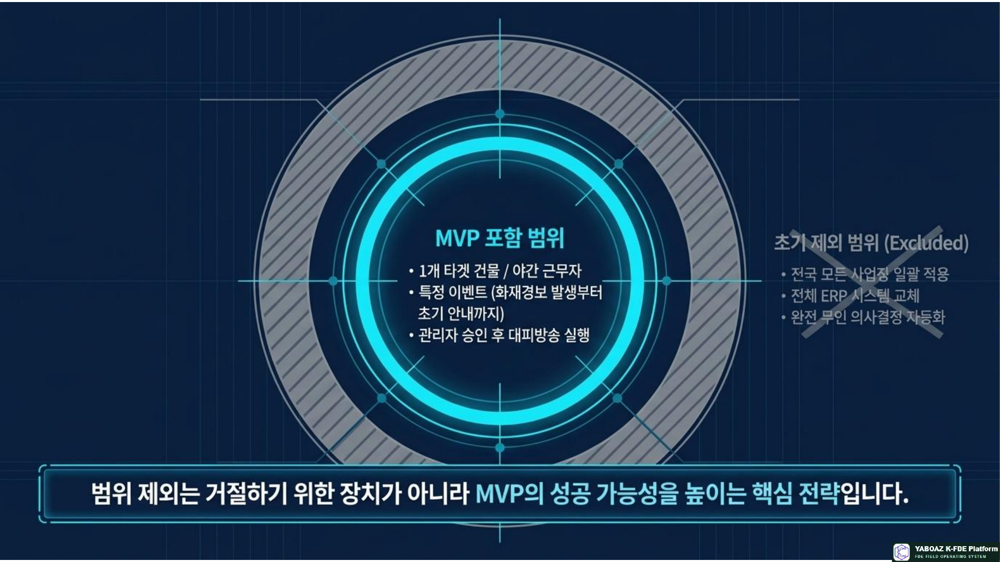
5. 이해관계자와 책임자 지정
회의에는 참석하지만 실제로 결정할 사람이 없는 상태를 방지합니다.
| 역할 | 책임 | 주요 관심 |
|---|---|---|
| Sponsor | 경영진 후원 | 전략 가치·투자효과 |
| Business Owner | 업무 책임 | 업무성과·운영 변화 |
| Decision Maker | 범위·예산·정책 승인 | 의사결정 |
| User | 실제 사용 | 사용성·업무부담 |
| Data·IT Owner | 데이터·연동·운영 | 품질·보안·유지보수 |
| Security·Legal | 위험·규정·감사 | 개인정보·법적 조건 |
| FDE·Approver | 구조화·실행·승인 | 성과·안전·책임 |
최소 지정 인원
최종 후원자, 고객 프로젝트 책임자, 현업 대표 사용자, 데이터·IT 책임자, 보안·법무 검토자, 주요 행동 승인자를 프로젝트 시작 전에 지정해야 합니다.
간단 RACI
목표·범위: Sponsor A / 업무책임자 R / FDE C
자료 제공: 업무책임자 A / IT·현업 R / FDE C
온톨로지·AI·워크플로: 업무책임자 A / FDE R / IT·현업 C
보안: 보안담당 A/R / IT·FDE C
MVP·KPI: Sponsor A / 업무책임자 R / FDE R
자료 제공: 업무책임자 A / IT·현업 R / FDE C
온톨로지·AI·워크플로: 업무책임자 A / FDE R / IT·현업 C
보안: 보안담당 A/R / IT·FDE C
MVP·KPI: Sponsor A / 업무책임자 R / FDE R
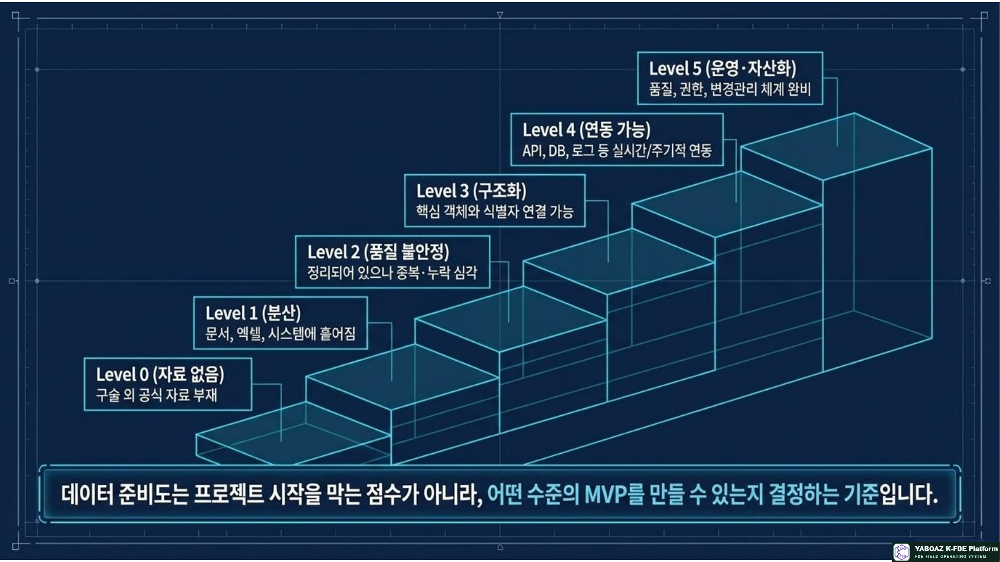
6. 프로젝트 범위와 데이터 조건
작게 시작하기
문제 하나 → 핵심 사용자 한 그룹 → 핵심 업무 하나 → 데이터 한 종류 또는 몇 종류 → 실행 행동 하나 → KPI 하나 또는 두 개
포함 범위대상 건물의 특정 구역, 특정 사용자, 경보부터 초기 안내까지, 시설·경보·대피경로 데이터
제외 범위전사 시스템 교체, 전국 확산, 완전 무인 의사결정, 모든 재난 유형, 기존 시스템 전면 재개발
데이터 준비도
| Level | 상태 |
|---|---|
| 0 | 자료 없음 |
| 1 | 자료는 있으나 문서·엑셀·시스템에 분산 |
| 2 | 정리되어 있으나 중복·누락·오래된 정보가 많음 |
| 3 | 핵심 객체와 식별자가 구조화됨 |
| 4 | API·DB·로그 연동 가능 |
| 5 | 품질·소유권·권한·변경관리·운영체계 확보 |
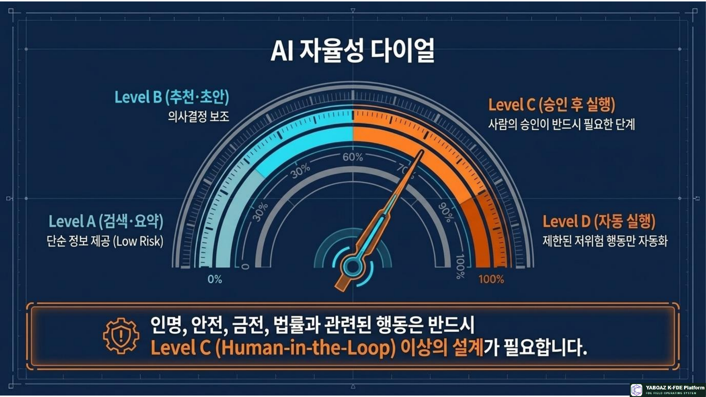
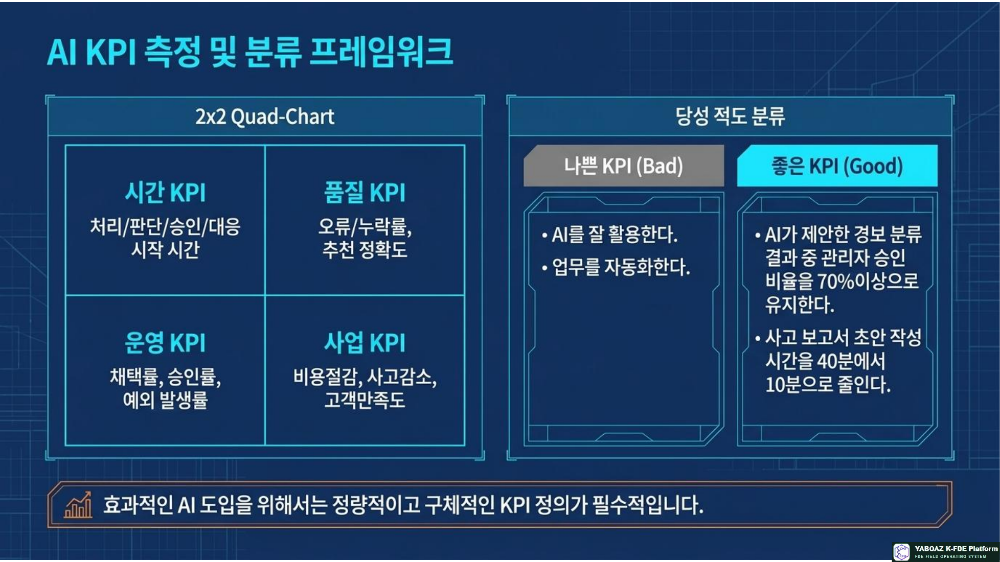
7. 보안·권한·AI 사용 조건과 KPI
보안 확인
데이터외부 반출, 클라우드, 개인정보, 민감정보
AI외부 모델 전송, 내부 모델, 금지 정보
권한보기·등록·수정·승인·실행·다운로드·삭제
운영보존기간, 사고 대응, 유지보수 책임
AI 행동 권한
| 수준 | 허용 범위 |
|---|---|
| A | 정보 검색·요약만 가능 |
| B | 추천과 초안 작성 가능 |
| C | 사람 승인 후 실행 가능 |
| D | 제한된 저위험 행동 자동 실행 가능 |
인명·안전·금전·법률·개인정보에 관련된 행동은 기본적으로 사람의 승인 후 실행합니다.
KPI 설정 공식
현재 기준선 → 목표값 → 측정방법 → 측정주기 → 책임자 → 검증자료
예시현재 경보 확인시간 평균 12분 → 목표 5분 이내 → 경보 시각과 확인 시각의 차이 → 매주 측정 → 시설관리팀 책임 → 경보 로그·확인 기록
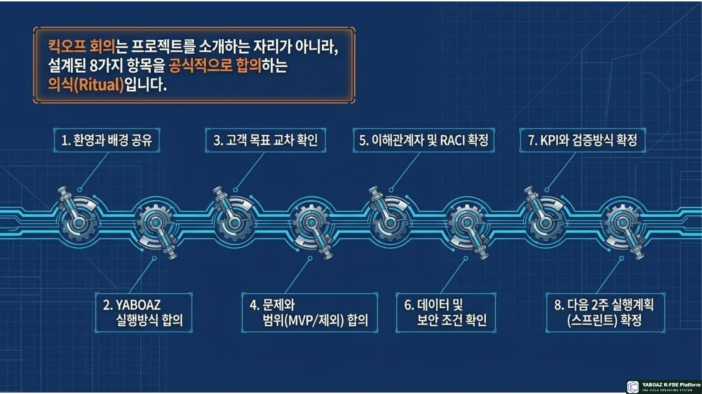
8. 킥오프와 13단계 실행계획
킥오프 진행 순서
01 배경 공유왜 시작했으며 어떤 변화를 기대하는가?
02 YABOAZ 방식발견 → 구조화 → AI·사람 협업 → 실행 → 검증 → 자산화
03 목표·범위문제와 제외 범위를 확정합니다.
04 책임·조건RACI, 데이터, 보안, AI 권한을 확인합니다.
05 KPI기준선과 목표, 검증방식을 합의합니다.
06 첫 2주자료 제출, 첫 현장탐색, 인터뷰 일정을 확정합니다.
01 온보딩 → 02 초기자료 정규화 → 03 2A4 → 04 현장 탐색 → 05 맞춤 인터뷰 → 06 온톨로지 → 07 AI 판단 → 08 Agent → 09 워크플로 → 10 UI·데이터 → 11 MVP → 12 Bootcamp → 13 자산화
온보딩 산출물
프로젝트 헌장고객 목표·문제·범위·책임자·일정
RACI표수행·책임·협의·공유 역할
데이터 요청서자료·소유자·접근·보안등급
KPI 합의서기준선·목표·측정·책임자
보안 검토 요청서AI 사용·개인정보·보존정책
2주 실행계획첫 현장 탐색·자료 제출·인터뷰 일정
완료 체크리스트
경영진·현업·사용자 목표 확인
핵심 문제와 대상 업무 확정
포함·제외 범위 확정
Sponsor·책임자·사용자 지정
IT·데이터·보안 담당자 지정
자료 목록과 소유자 확인
데이터 접근권한 확보
개인정보·민감정보 분류
AI 사용 범위 결정
기준선·목표 KPI 합의
검증 방식과 일정 확정
첫 현장탐색 일정 확정
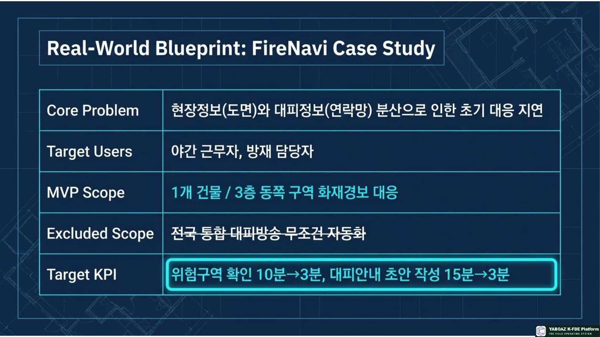
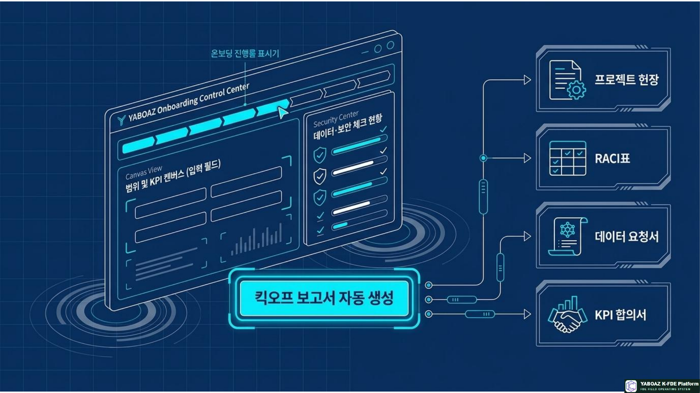
9. FireNavi 적용 예시
프로젝트 목표화재·재난 발생 시 현장정보와 대피정보를 연결해 초기 대응을 빠르게 합니다.
첫 MVP1개 건물·3층 동쪽 구역·야간 시설관리자·화재경보·위험도 확인·대피 안내 초안·관리자 승인
포함 데이터도면, 방 용도, 비상구, 소화설비, 경보 로그, 연락망, 점검 기록
제외 범위전국 통합, 완전 자동 방송, 공식 출동명령, 무제한 인명정보 공유
KPI 예시
초기 위험구역 확인 10분 → 3분
대피경로 확인 8분 → 2분
안내 초안 작성 15분 → 3분
관리자 승인 후 실행률 90% 이상
초기 위험구역 확인 10분 → 3분
대피경로 확인 8분 → 2분
안내 초안 작성 15분 → 3분
관리자 승인 후 실행률 90% 이상
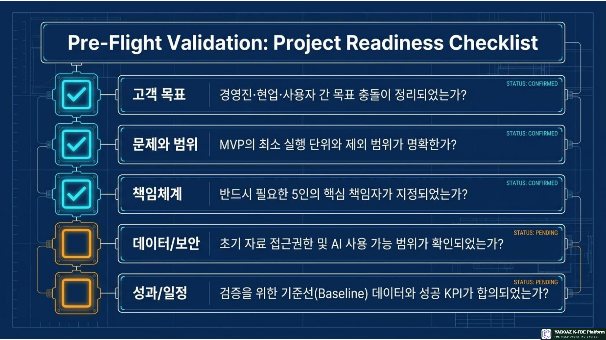
10. 최종 정의
고객 온보딩
고객 온보딩은 고객의 목표를 실행 가능한 문제·책임체계·데이터·KPI로 바꾸는 첫 번째 FDE 프로젝트입니다.
고객 목표 → 핵심 문제 → 이해관계자와 책임자 → 범위 → 데이터와 보안 → KPI → 실행 일정 → 첫 번째 현장 행동
누가 이 프로젝트의 책임자인가? 어떤 업무 문제를 해결하는가? 어떤 데이터가 필요한가? AI는 무엇을 하고 사람은 어디에서 승인하는가? 성공을 어떤 숫자로 판단하는가?
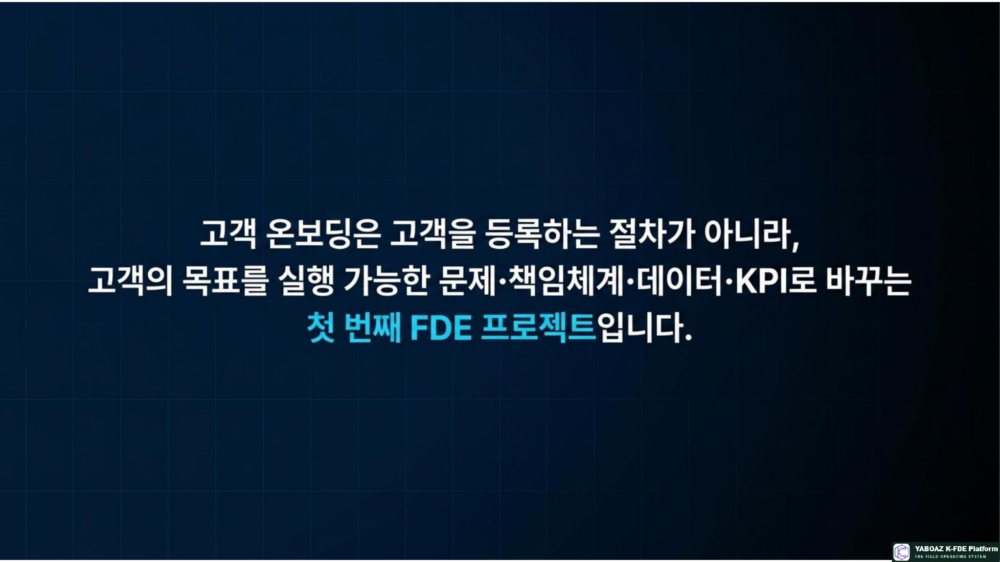